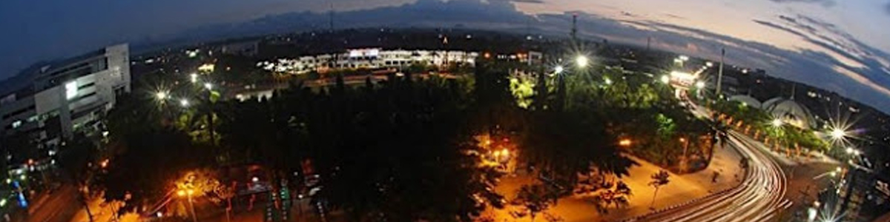

AIR TERJUN TANCAK
Sesuai dengan namanya yang terletak di desa Seputih, kecamatan Mayang. Untuk menuju ke lokasi air terjun dari kota Jember menuju arah timur ke Banyuwangi, setelah tiba di SPBU Mayang, belok ke kanan hingga sampai di perempatan dan ambil arah lurus sampai bertemu petunjuk jalan yang bertuliskan arah air terjun Seputih. Selanjutnya perjalanan melewati permukiman penduduk dengan jalan tanah yang hanya bisa dilewati kendaraan roda dua atau motor. Pengunjung bisa menitipkan kendaraannya atau parkir di rumah penduduk di ujung jalan perkampungan, dari sini perjalanan dilanjutkan dengan berjalan kaki melewati jalan setapak dan pada musim penghujan cukup licin jadi hati-hati. Di sekitar air terjun tancak akan disuguhi pemandangan tebing tinggi yang ditumbuhi tanaman semak belukar yang masih alami.
Rute menuju air terjun tancak melalui jember kota :
Setelah menemukan Pasar Rambipuji, akan ada pertigaan. Dari situ, ambilah belokan ke kiri. Ikuti jalan menuju Desa Rambigundam, kemudian Desa Panti, lalu Desa Serut.
Biaya yang dikeluarkan untuk menuju air terjun hanya 2.500 rupiah saja untuk biaya parkir.
- Air Terjun Tancak berada di bawah kaki Gunung Pasang dan untuk menuju tempat itu, kalian harus melewati areal Perkebunan Gunung Pasang.
-
Setelah menempuh jarak sekitar setengah jam dari pabrik, kalian akan menemukan percabangan jalan.
-
Dari perkebunan kopi ini, perjalanan tinggal 45 menit saja. Yang harus kalian lakukan adalah mengikuti jalur yang ada.
KEINDAHAN AIR TERJUN TANCAK

@ DESTINASI JEMBER SITE BY DESTINASI JEMBER